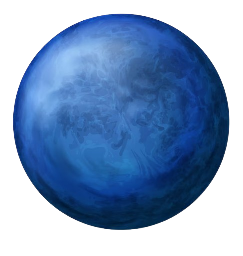

نبتون هو الكوكب الثامن والأبعد من الشمس في نظامنا الشمسي، ويُعرف بلونه الأزرق الداكن بسبب وجود غاز الميثان في غلافه الجوي. يُعتبر نبتون كوكبًا غازيًا عملاقًا، ويتميز بعواصف قوية ورياح شديدة.
يمتلك نبتون نظامًا من الحلقات الضعيفة وأكثر من 14 قمرًا، ومن أبرزها "تريتون"، الذي يُعتبر أكبر قمر له.
